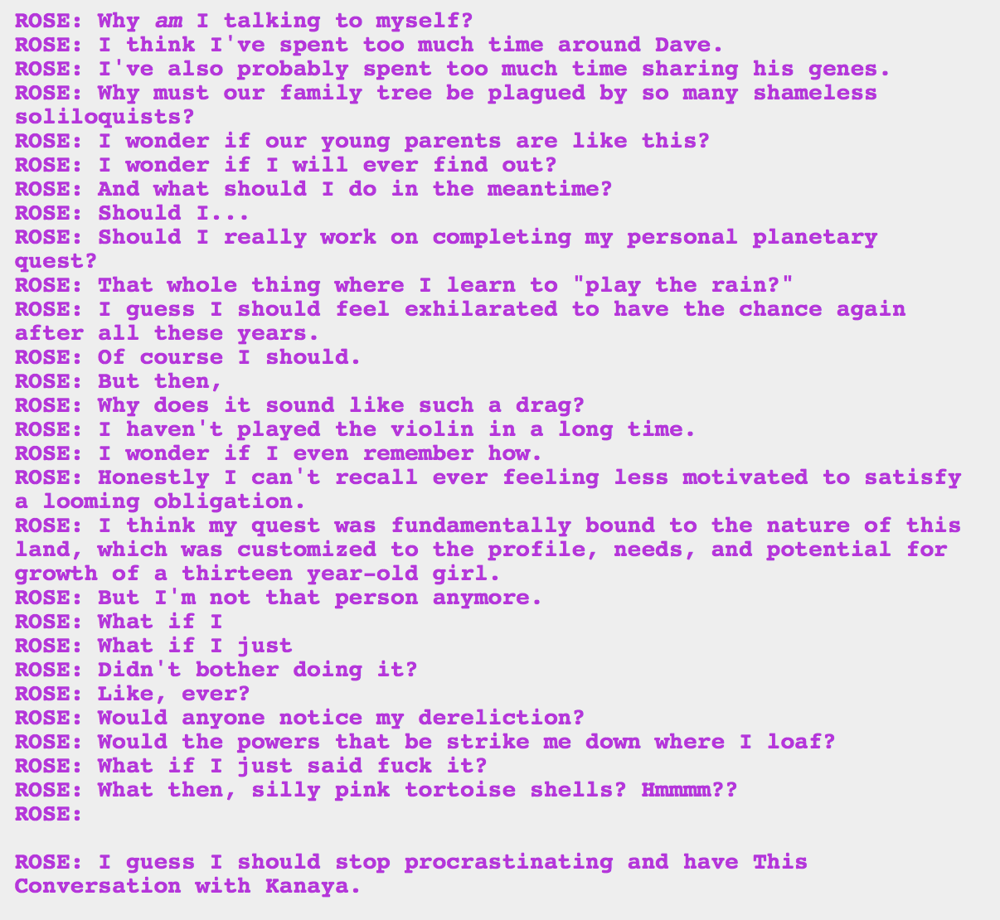

Shush Rose, soliloquies are awesome. You should give more of them.
Gosh, all this apathy. She has a point that the quest was designed to be beaten three years before, though. So it should be a breeze now that she’s a mighty god tier! And all that grist she could get! If grist even matters anymore.